The rate of species extinction may now be as high as one per day.
June 17, 1987, is not a date most people will remember for long. On that day, the last dusky seaside sparrow in the world was found dead of old age in its cage in Florida. His species had fallen victim to the space program, a mosquito-abatement project, fire and Walt Disney World. It is the latest species to be declared officially extinct. It won't be the last.
There's nothing quite so final, so irrevocable, as extinction. There's no appeal, no rematch, no instant replay to see who should be penalized. And driving thousands of species from the face of the earth is as big a crime as we could possibly commit against the future.
Besides-and ultimately more important than-the loss of directly exploitable economic benefits when a species becomes extinct, the continuing smooth operation of our planet is threatened. Biologists sometimes liken the diversity of species on earth to the numerous rivets in a piece of equipment. The dispersion of the load through the rivets makes the machine flexible and durable; a few of the rivets can be lost without disaster. Once a certain number pop out, however, massive failure occurs. The diversity of species in the earth's ecosystems provides this flexibility and serves humans by stabilizing the climate, processing wastes and returning nutrients, generating and maintaining soils and controlling pests and diseases.
Cataloguing the Morgue
In the 108 issues (and 18 years) since MOTHER began her life, several thousand species have been extinguished worldwide. The number is unknown and unknowable. Estimates vary widely. Norman Myers, an Englishman who has spent his life studying the wildlife in East Africa, estimates that we may be losing a species a day at present. That rate could increase to a species per hour by the year 2000.
We do know some facts about extinction rates, thanks to the Endangered Species Act of 1973. That law set up an elaborate system for listing various species worldwide as endangered or threatened. Species are added to the list after a review by officials in the Fish and Wildlife Service's (FWS) Office of Endangered Species.
This is a fiercely political process, and greed often wins out over biology. The presence of an endangered species can halt any development that might threaten that species' habitat, so there is incentive to prodevelopment types to keep that list as short as possible. (During the first three years of the Reagan administration, for example, only two species were added to the lists, despite near-unanimous agreement that there are thousands of as yet unlisted species in need of protection.)
In addition, it's often impossible to determine precisely when a listed species finally does vanish: One cannot prove a negative. A species is removed from the endangered list only when there is scientific consensus that the species is gone.
On rare occasions, there is good news, as when on May 5, 1986, ornithologists announced that they had positively identified two ivory-billed woodpeckers in Cuba-birds that had been feared extinct for two decades.
Official Body Count
Only five species have been declared officially extinct and removed from the endangered species list since it was begun in 1973: the Tecopa pupfish (1982), the longjaw cisco (a Great Lakes fish, 1983), the blue pike (1983), the Santa Barbara song sparrow (1983) and the dusky seaside sparrow. During the same period, three were taken off the list for the better reason: They had pulled back from the brink of extinction. These were all birds that live on Belau (formerly spelled Palau) in the western Pacific.
The Fish and Wildlife Service's international list of endangered and threatened animals, fish, amphibians, birds and insects now numbers around a thousand. (There are at least 200 endangered plants in the United States alone; data aren't good for the rest of the world.) Many of them are teetering on the brink of extinction, and a variety of government agencies and citizen groups are working to rescue them before it's too late.
What Now?
The extinction of species, as those who help the process along like to remind us, is a natural phenomenon: "The dinosaurs passed from the earth without meddling by humans, didn't they?" Yes, but the point is irrelevant. Extinction is now happening at an unprecedented rate, and it's accelerating. There are economic and medical reasons to stem the tide-as well as the ecological and moral ones. We can do it, but not unless we increase our efforts enormously-and do so quickly.
Tom Turner is staff writer for the Sierra Club Legal Defense Fund in San Francisco.
California condor Gymnogyps californianus The last wild California condor was taken into captivity on Easter Sunday 1987, officials having determined that the wilderness was a threat to the species' survival. As is the case with many species that have already disappeared, thecondor was once common, ranging from Canada to Mexico and from the Rocky Mountains to the Pacific. It has been poisoned, shot, and had its lands systematically appropriated by hu mans for their purposes. Faced with a population of condors that has plummeted from thousands a century ago to around 30 a decade ago, the FWS and the National Audubon Society embarked on a "condor recovery program" that aimed to restore the species by taking eggs, young birds and adults from the wild and rearing them in captivity. After 20 years, perhaps, the birds will be returned to the wild. Estimated population: 0 wild, 28 in two zoos.
Palila Loxioides bailleui This Hawaiian honeycreeper (all native Hawaiian birds are legally endangered) is threatened by competition for food and shelter from feral sheep and goats that have been moved into its only range: the upper slopes of Mauna Kea on the island of Hawaii. Some years ago, the Sierra Club Legal Defense Fund brought a suit with palila itself as the lead plaintiff-the first time a court had allowed such a case to be prosecuted. The palila prevailed, and the court ordered the government of Hawaii to remove one of the species of goats from the birds' habitat. Now the Legal Defense Fund is back in court to seek removal of another species of goat in palila country. Estimated population: 2,000.
Black-footed ferret
Mustela nigripes
This weasel was thought extinct until 1984, when a colony was discovered in Wyoming. Black-footed ferrets live exclusively with prairie dogs, their principal food. The ferrets have been nearly exterminated by poisons aimed at the prairie dogs, by epidemics of dog distemper, and by a renegade virus that struck them recently. The ferrets' lot, though still tenuous, may be improving. Captive breeding experiments have finally yielded survivors, and there have been confirmed sightings in the wild. Estimated population: 35-40.
Sciota mad tom
Noturus trautmani This small catfish from the Ohio River may already be extinct. It was last seen in 1958 or '59, though it was very difficult to find. This is a good illustration of how the FWS is loath to actually declare a species extinct. The regulations on this point read as follows:
"Extinction: Unless all individuals of the listed species had been previously identified and located, and were later found to be extirpated from their previous range, a sufficient period of time must be allowed before delisting to indicate clearly that the species is extinct." Estimated population: Unknown.
Perdido Key beach moose
Peromyscus polionotus trissyllepsis This species was discovered during studies of the environmental impact of building condominium on Perdido Key off the coast of Alabama. Biologists counted the little rascals, determined that their population stood at around two dozen, and immediately had the mouse added to the endangered species list. Construction of the condos is currently under court-ordered injunction pending the outcome of a lawsuit. Estimated population: 24.
Bowhead whale
Balaena mysticetus Driven to the edge of extinction in the last century by Yankee whalers, the bowhead is now hunted only by Inupiat Eskimos in Alaska. While it's still in peril, it provides an interesting example of the hubris of Western science. In 1977, responding to scientific estimates that the population had plunged to between 800 and 1,200 whales, the International Whaling Commission voted to ban all hunting of bowheads, whether for commercial or subsistence purposes. The Eskimos reacted sharply, saying that there were far more than 1,200 bowheads still alive, and that native people weren't stupid enough to kill the last remnant of a species vitally important to their survival. The Eskimos were permitted to hunt, and as of 1986, owing entirely to enhanced counting capability, the total population of towheads is now considered to be in excess of 7,000. Estimated population: 7,000.
|
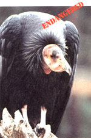 Long-jawed cisco |
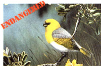 Tecopa pupfish |
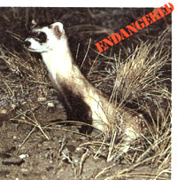 Blue pike |
|
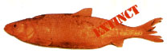 Perdido Key beach moose |
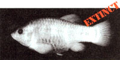 Dusky seaside sparrow |
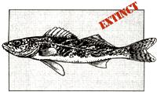 Santa Barbara song sparrow |
|
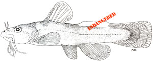 |
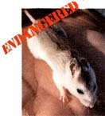 |
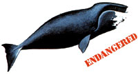 |
|
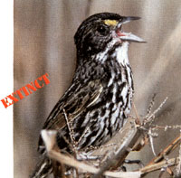 |
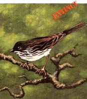 |
|